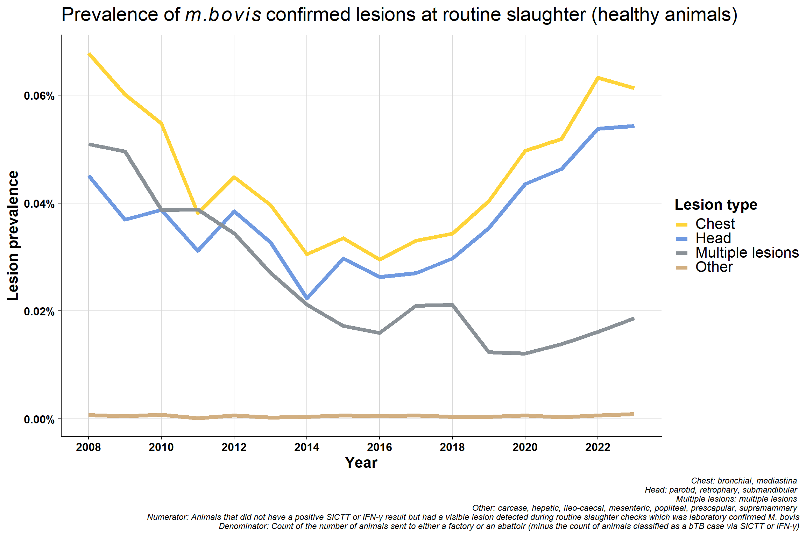

# $description
# . n percent
# INCONCLUSIVE 3715 0.03394554094
# OTHER REACTOR 873 0.00797697368
# RESEARCH 2 0.00001827485
# SINGLETON 7463 0.06819261696
# SLAUGHTER CHECK 87406 0.79866593567
# SLAUGHTER CHECK (ER36) 1246 0.01138523392
# SPECIAL INVESTIGATION 7039 0.06431834795
# STRAIN TYPE 1696 0.015497076025 Prevalence of confirmed M.bovis lesions found in animals at routine slaughter
\(~\) \(~\)
5.1 Introduction
This document presents the prevalence of animals with confirmed m.bovis lesions found at routine slaughter (also known as ‘factory lesion cases’). Note, we are missing some lesions for Dec 2023.
5.2 Definitions
5.2.1 Proportion of animals with lesions at routine slaughter
Lab file:
AIM database:
# data_type no_by_type
# <chr> <int>
# 1 ABAT 1695012
# 2 DoF 4992685
# 3 EXP 4467609
# 4 F_to_F 20715340
# 5 FACT 31456498
# 6 IMP 237290
# 7 Mart 29832107
# 8 OLD 1218543Numerator:
- Extracted
SLAUGHTER CHECKandSLAUGHTER CHECK (ER36)(negative animal came from a herd that is in a bTB breakdown) - dropped any that had a positive SICTT or positive IFN-γ result
- positive lab result (even if
lesion = "NVL"? must have been positive onmacroscopic,hist,cultureor PCR?)
Denominator:
- From AIM database, extracted
data_type %in% c("FACT", "ABAT")(excludingDoFas it is not routine to do inspections in knackeries, which we think includes young reactor calves - are these killed on farm first?) - John - You are not legally allowed bring a live animal to a knackery - summarised by
move_from_final - merged in herd-type from AHCS/Brock et al.
- subtracted count of animals already classified as a bTB case via SICTT or IFN-γ
5.2.2 Lesions
We classified lesions into head or chest:
lesion_typesSome animals have NVL but a positive result in the lab file even though they are SLAUGHTER CHECK or SLAUGHTER CHECK (ER36):
# head_or_chest n percent valid_percent
# Chest 12742 0.385863969 0.39113485
# Head 10285 0.311459027 0.31571354
# Multiple lesions 6940 0.210162922 0.21303374
# Non-visible lesions 2464 0.074616922 0.07563619
# Other 146 0.004421295 0.00448169
# <NA> 445 0.013475865 NAIn my overall lesion prevalence calculations, I have included these NVL cases which we came to conclude is correct as they had an overall lab positive result.
\(~\) \(~\)
\(~\) \(~\)
5.3 Number of animals sent to slaughter
5.3.1 Overall
\(~\) \(~\)
\(~\) \(~\)
Monthly:
\(~\) \(~\)
\(~\) \(~\)
5.3.2 By AHCS herd-type
\(~\) \(~\)
\(~\) \(~\)
Monthly:
5.3.3 By Brock et al. herd-type
\(~\) \(~\)
\(~\) \(~\)
Monthly:
Interesting that beef (which are primarly suckler herds) seem to be sending less animals to slaughter and are less erratic in terms of sending pattern in a year (in recent years).
Possible reasons:
- The number of beef herds are going down in general
- They are sending their animals to fatteners/traders
Dairy send most animals to slaughter around drying off period (60 days prior to calving)
\(~\) \(~\)
\(~\) \(~\)
5.4 Overall lesion prevalence at routine slaughter animals
5.4.1 All
\(~\) \(~\)
\(~\) \(~\)
Monthly version:
\(~\) \(~\)
\(~\) \(~\)
5.4.2 All by lesion type

\(~\) \(~\)
\(~\) \(~\)
Monthly version:
\(~\) \(~\)
\(~\) \(~\)
5.5 AHCS herd-type
For reference, this is the proportion of different herd-types:
Herd-type | 2008 | 2009 | 2010 | 2011 | 2012 | 2013 | 2014 | 2015 | 2016 | 2017 | 2018 | 2019 | 2020 | 2021 | 2022 | 2023 |
|---|---|---|---|---|---|---|---|---|---|---|---|---|---|---|---|---|
Dairy | 14527 (20.1) | 14453 (20.4) | 14293 (20.4) | 14040 (21.6) | 13830 (22.7) | 14056 (22.0) | 13851 (21.4) | 13324 (21.9) | 12979 (22.1) | 13015 (22.2) | 13065 (22.7) | 12536 (22.7) | 12963 (22.8) | 12557 (24.1) | 12144 (24.8) | 12022 (25.4) |
Beef | 15017 (20.8) | 14995 (21.1) | 15051 (21.5) | 14043 (21.6) | 13272 (21.7) | 14111 (22.1) | 14596 (22.6) | 13970 (23.0) | 13899 (23.7) | 14149 (24.1) | 14098 (24.5) | 13705 (24.8) | 13968 (24.6) | 13088 (25.1) | 12417 (25.4) | 11952 (25.2) |
Suckler | 36481 (50.5) | 35565 (50.1) | 34878 (49.7) | 31605 (48.5) | 28974 (47.5) | 30551 (47.9) | 31119 (48.1) | 28727 (47.3) | 27307 (46.6) | 27218 (46.4) | 26254 (45.6) | 25067 (45.4) | 25963 (45.6) | 23014 (44.1) | 21028 (42.9) | 20255 (42.8) |
Other | 6242 (8.6) | 5989 (8.4) | 5921 (8.4) | 5427 (8.3) | 4983 (8.2) | 5078 (8.0) | 5079 (7.9) | 4728 (7.8) | 4418 (7.5) | 4282 (7.3) | 4146 (7.2) | 3929 (7.1) | 4002 (7.0) | 3539 (6.8) | 3379 (6.9) | 3142 (6.6) |
AHCS: Animal Health Computer System | ||||||||||||||||
5.5.1 Lesion prevalence
Why is suckler/beef higher than dairy (if we think of dairy as being the primary problem in terms of transmission e.g. dairy intensification etc)?
Possible explanations:
- Possibly a consequence of testing
- Dairy vs suckler/beef testing is completely different
- Suckler herds are wilder and harder to test, dairy are usually much easier to test
- Possibly more incentive in a large dairy herd to quickly get rid of the problem before it goes through the herd (sucklers will be more out in the open and possibly less chance of spreading quickly)
- Infection is probably caught earlier in dairy herds (as they are easier to test and more IFN-γ testing is also done which should get earlier infection)
\(~\) \(~\)
\(~\) \(~\)
Monthly version:

\(~\) \(~\)
\(~\) \(~\)
5.5.2 By lesion type
\(~\) \(~\)
\(~\) \(~\)
Monthly version:
\(~\) \(~\)
\(~\) \(~\)
5.6 Brock et al. herd-type
For reference, this is the proportion of different herd-types:
Herd-type | 2008 | 2009 | 2010 | 2011 | 2012 | 2013 | 2014 | 2015 | 2016 | 2017 | 2018 | 2019 | 2020 | 2021 | 2022 | 2023 |
|---|---|---|---|---|---|---|---|---|---|---|---|---|---|---|---|---|
Beef | 37345 (51.7) | 36028 (50.7) | 34826 (49.7) | 31088 (47.7) | 28263 (46.3) | 30125 (47.2) | 29691 (45.9) | 27070 (44.6) | 25195 (43.0) | 24856 (42.4) | 23834 (41.4) | 22110 (40.0) | 22761 (40.0) | 19528 (37.4) | 17294 (35.3) | 16271 (34.3) |
Dairy | 9181 (12.7) | 9701 (13.7) | 10059 (14.3) | 10641 (16.3) | 10820 (17.7) | 11042 (17.3) | 10846 (16.8) | 10224 (16.8) | 9984 (17.0) | 9758 (16.6) | 9452 (16.4) | 9079 (16.4) | 9303 (16.4) | 9248 (17.7) | 9201 (18.8) | 8864 (18.7) |
Fattener | 15579 (21.6) | 15796 (22.2) | 16176 (23.1) | 14870 (22.8) | 13660 (22.4) | 14182 (22.2) | 15382 (23.8) | 14663 (24.1) | 15080 (25.7) | 15556 (26.5) | 15817 (27.5) | 16159 (29.3) | 16092 (28.3) | 15281 (29.3) | 15078 (30.8) | 14768 (31.2) |
Mixed | 6125 (8.5) | 5356 (7.5) | 4696 (6.7) | 4103 (6.3) | 3952 (6.5) | 3911 (6.1) | 3849 (6.0) | 3872 (6.4) | 3878 (6.6) | 3880 (6.6) | 4068 (7.1) | 3750 (6.8) | 4063 (7.1) | 3647 (7.0) | 3324 (6.8) | 3393 (7.2) |
Store | 3195 (4.4) | 3296 (4.6) | 3469 (4.9) | 3442 (5.3) | 3473 (5.7) | 3610 (5.7) | 3991 (6.2) | 4048 (6.7) | 3646 (6.2) | 3830 (6.5) | 3678 (6.4) | 3480 (6.3) | 3938 (6.9) | 3816 (7.3) | 3369 (6.9) | 3398 (7.2) |
Trader | 475 (0.7) | 525 (0.7) | 530 (0.8) | 611 (0.9) | 621 (1.0) | 671 (1.1) | 609 (0.9) | 581 (1.0) | 549 (0.9) | 524 (0.9) | 490 (0.9) | 459 (0.8) | 500 (0.9) | 475 (0.9) | 509 (1.0) | 520 (1.1) |
Unknown | 367 (0.5) | 300 (0.4) | 387 (0.6) | 360 (0.6) | 270 (0.4) | 255 (0.4) | 277 (0.4) | 291 (0.5) | 271 (0.5) | 260 (0.4) | 224 (0.4) | 200 (0.4) | 239 (0.4) | 203 (0.4) | 193 (0.4) | 157 (0.3) |
AHCS: Animal Health Computer System | ||||||||||||||||
5.6.1 Lesion prevalence
\(~\) \(~\)
\(~\) \(~\)
Redone excluding Unknown category:
\(~\) \(~\)
\(~\) \(~\)
Monthly version:

\(~\) \(~\)
\(~\) \(~\)
5.6.2 By lesion type
\(~\) \(~\)
\(~\) \(~\)
Monthly version:
\(~\) \(~\)
\(~\) \(~\)
5.6.3 Alternative plot:
Same data used in previously plot but presented differently. Now grouped by lesion type which clearly shows the decrease in mulitple lesions group:
\(~\) \(~\)
\(~\) \(~\)
5.7 Notes
Why would lesions in head/chest be increasing? - change in way recording is done? - differences between factories? - A very small minority might specialise in kosher meats and so may inspect animals differently but unlike to have an effect nationally
We might expect dairy might have higher lesion rates than beef herds (intensification hypothesis of dairy herds) - why dont we see this? - possible age effects in dairy? Might need to stratify by age/sex
Replicate above for bTB cases
From DAFM:
What are the average lesion detection rates? - 30% of skin test reactors will have visible lesions at post-mortem inspection. - 15% of Gamma Interferon reactors will have visible lesions at post-mortem inspection. (This figure relates to cattle, in herds with high risk breakdowns, which are in the same groups as cattle that were skin test reactors).
Biology of lesion trends
Healthy lesion rate seems to mirror reactor lesion rate (previous chapter) which suggests, these are not historic infections but relatively new?
Why were levels high in 2008? It seems to be the peak of that cycle at the time and then there was a serious effort to clean-up the whole system (concerted effort): there were focused investigations, hot-spots were priortised (e.g., Monaghan), fraud cases were investigated, the quality control programme was brought in, SICTT & PVP training was increased/introduced, there was much more awareness to look out for lesions due to the ongoing gamma trial at the time etc. IFN-γ rates were up around 30% indicating that we were missing lots of infection at the time. This may also partly explain why chest prevalence was high back in 2008 - we were missing lots of infection and it had seeded in animals.
Difference in proportion of chest vs head lesions. Not seeing a difference in beef/sucklers but are in dairy - suggests this is real effect? The increase in chest compared to head in dairy is consistent with increased immunosuppression. bTB is a chest disease, if an animal is stressed it will stay in the lungs (before eventually spreading around the body when it has reached a more advanced stage). If an animal is immunosuppressed, they won’t initially get multiple lesions - which seems counter intuitive. Their immune system is not competent enough to disseminate the disease around the body. More stress = more chest involvement. If you get more lung infection, you get more transmission.
Why is the “multiple lesions” group decreasing? This may be related to the improvement in detection since 2008 which may also mean earlier detection. Multiple lesions are a reflection of more advanced infection but we are generally detecting bTB at an early stage now with tighter testing quality (QA programme and IFN-γ etc.).
What is ideal weather for mbovis? - probably warm, moist soil. Mild, damp rather than dry.
Re: the lesions, they could take six months to develop, so the later summer lesion profile could well reflect infection dynamics the previous March
Policy:
- I wonder would it be worth considering additionally testing for herds with a lot of chest detections (round of IFN-γ testing)? Or even herds with animals with multiple lesions (more advanced infection)? I am checking the data on this
Questions/ideas to explore
- Whats interesting is that dairy seem to send animals primarily to slaughter at the start of the year (presumably during drying period?) but have the most lesions presented at slaughter in the 2nd half of the year. Perhaps these lesioned animals come from a subset of dairy herds who are not spring calving herds?
- why do we see a clean, consistent seasonal effect of an increase in lesion prevalence later in the year?
- Does it suggests that there a cohort of riskier herds, that send their animals to slaughter later in the year (and perhaps, do not send animals earlier in the year and so we miss their infections)- I need to check this.
- Change in sensitivity by time of year? Or is it related to previous point, that riskier herds are just not sending their animals at that time? Or, they are not riskier per se, but as they don’t have a round test earlier in the year, earlier infections are not detected after winter housing and infection is allowed to seed in the animals and lesions form.
- Is there a difference in BD size between a herd with more chest vs head vs multiple lesions? Hypothesis here is that herds with more multiple lesions/chest, may have more advanced disease and increased likelihood of having more/missed infection. I need to check this.
- It would be really interesting to get the age profile of these – I will do these at some stage for my age work anyway but it will just take a bit of work. What we are seeing could be a certain aged animal that tends to get sent to slaughter later in the year.
- Is there a reporting bias? Does inspection start at head?
- Redo to include Brock sub-classes: may help tease out which herds are sending animals at later time of year
Follow-up on lesion detection/inspection biases
- Usually two VIs in the factory who act in a supervisory role. Temporary VI (TVIs) do the inspections and there are usually 4 TVIs working at one time. TVIs are usually private vets who do this as additional work. You have to be a vet to do meat inspection in Ireland (although this might not be the rule in other countries?)
- Process of inspection
- The crucial piece of information is that (at least in this factory but should be similar in others) different body parts go to different people for inspection so one TVI will not inspect the whole body of one animal.
- Each animal is distributed into 4 separate process lines:
- Head
- Pluck (lung, chest)
- Belly (intestines etc?)
- inspection of the split carcass (carcass hoisted up)
- TVIs will be stationed at one of these lines for the duration of their shifts but will probably rotate lines between shifts (e.g. so one TVI would not always be stationed on the head line)
- In this particular factory head and pluck lines were close together so the TVIs could theoretically talk to each other but more than likely that the inspection is independent
- Multiple lesions (MLs): need to clarify if this means multiple lesions within the one station (so a TVI spots multiple lesions in the head line) or does it mean lesions were spotted in multiple body part locations. Wasn’t sure if ML is assigned by TVI on their line of at the end of all the stations. I suppose it could be a mixture of both?
- In general, TVIs have moved away from diagnosing a lesion as mbovis (in healthy animals), any suspect lesion is generally just sent to the laboratory for testing
Reactor inspections (animals classified as bTB before entering factory via SICTT or GIF)
- In this factory, reactors were inspected at a different time to the healthy animals (e.g. altogether after lunch). TVIs were told that these were reactor animals. The lines were slowed down a little bit (compared to healthy animal) which naturally gave them a small bit more of a thorough inspection. In terms of detecting lesions, naturally, there may be some confirmation bias at play here already knowing that they were reactor animals?
5.8 Brock et al herd-types definitions
Dairy
- Residency in the herd is longer than 30 days for at least 50% of the herd.
- Proportion of animals in a herd that have ever calved by September, relative to herd size is greater than 25%.
- 66% or more of the animals are of a dairy breed.
Beef
- (generally just suckler from AHCS I think)
- Residency in the herd is longer than 30 days for at least 50% of the herd
- Proportion of animals in a herd that have ever calved by September, relative to herd size is greater than 25%.
- Less than 33% of the animals are of a dairy breed.
Mixed
- Residency in the herd is longer than 30 days for at least 50% of the herd.
- Proportion of animals in a herd that have ever calved by September, relative to herd size is greater than 25%.
- 33% or more of the animals and less than 66% are of a dairy breed.
Store
- Residency in the herd is longer than 30 days for at least 50% of the herd.
- Less than 25% of the animals in the herd have calved in the past
- Less than 50% of the animals in the herd go directly to slaughter
Fattener
- Residency in the herd is longer than 30 days for at least 50% of the herd.
- Proportion of animals in a herd that have ever calved by September, relative to herd size is greater than 25%.
- 50% or more of the animals in the herd go directly to slaughter.
Trader
- 50% or more of the animals spend less than 30 days in the herd.
Seasonal
- Animals are kept in the herd for only part of the year. (As of 2024, “seasonal” is no longer a category - they have been moved into “trader” and “fattener” categories respectively)
Unknown - Self-explanatory.
\(~\) \(~\)
\(~\) \(~\)
5.9 bTB slaughter-house/lesion/seasonality papers:
Clegg TA, Good M, More SJ. Risk factors for cattle presenting with a confirmed bTB lesion at slaughter, from herds with no evidence of within-herd transmission. Prev Vet Med. 2016 Apr 1;126:111-20. doi: 10.1016/j.prevetmed.2016.02.003. Epub 2016 Feb 9. PMID: 26895647. https://pubmed.ncbi.nlm.nih.gov/26895647/
Willeberg PW, McAloon CG, Houtsma E, Higgins I, Clegg TA, More SJ. The Herd-Level Sensitivity of Abattoir Surveillance for Bovine Tuberculosis: Simulating the Effects of Current and Potentially Modified Meat Inspection Procedures in Irish Cattle. Front Vet Sci. 2018 May 23;5:82. doi: 10.3389/fvets.2018.00082. PMID: 29876359; PMCID: PMC5974157. https://pubmed.ncbi.nlm.nih.gov/29876359/
Gonçalves S, Cardoso MF, Vieira-Pinto M, Gomes-Neves E. Bovine Tuberculosis - Analysis of 10-year cases and impact of visual inspection in the surveillance at the slaughterhouse in Portugal. One Health. 2022 Oct 30;15:100451. doi: 10.1016/j.onehlt.2022.100451. PMID: 36532678; PMCID: PMC9754928. https://pubmed.ncbi.nlm.nih.gov/36532678/
Byrne AW, Barrett D, Breslin P, Madden JM, O’Keeffe J, Ryan E. Post-mortem surveillance of bovine tuberculosis in Ireland: herd-level variation in the probability of herds disclosed with lesions at routine slaughter to have skin test reactors at follow-up test. Vet Res Commun. 2020 Nov;44(3-4):131-136. doi: 10.1007/s11259-020-09777-w. Epub 2020 Jun 24. PMID: 32583301; PMCID: PMC7312117. https://pmc.ncbi.nlm.nih.gov/articles/PMC7312117/
Shittu A, Clifton-Hadley RS, Ely ER, Upton PU, Downs SH. Factors associated with bovine tuberculosis confirmation rates in suspect lesions found in cattle at routine slaughter in Great Britain, 2003-2008. Prev Vet Med. 2013 Jul 1;110(3-4):395-404. doi: 10.1016/j.prevetmed.2013.03.001. Epub 2013 Mar 26. PMID: 23540447. https://pubmed.ncbi.nlm.nih.gov/23540447/
Olea-Popelka F, Freeman Z, White P, Costello E, O’Keeffe J, Frankena K, Martin W, More S. Relative effectiveness of irish factories in the surveillance of slaughtered cattle for visible lesions of tuberculosis, 2005-2007. Ir Vet J. 2012 Jan 30;65(1):2. doi: 10.1186/2046-0481-65-2. PMID: 22289139; PMCID: PMC3311595. https://pubmed.ncbi.nlm.nih.gov/22289139/
Male Here RR, Ryan E, Breslin P, Frankena K, Byrne AW. Revisiting the relative effectiveness of slaughterhouses in Ireland to detect tuberculosis lesions in cattle (2014-2018). PLoS One. 2022 Oct 7;17(10):e0275259. doi: 10.1371/journal.pone.0275259. PMID: 36206240; PMCID: PMC9543943. https://pubmed.ncbi.nlm.nih.gov/36206240/
Frankena K, White PW, O’Keeffe J, Costello E, Martin SW, van Grevenhof I, More SJ. Quantification of the relative efficiency of factory surveillance in the disclosure of tuberculosis lesions in attested Irish cattle. Vet Rec. 2007 Nov 17;161(20):679-84. doi: 10.1136/vr.161.20.679. PMID: 18024922. https://pubmed.ncbi.nlm.nih.gov/18024922/
Pascual-Linaza AV, Gordon AW, Stringer LA, Menzies FD. Efficiency of slaughterhouse surveillance for the detection of bovine tuberculosis in cattle in Northern Ireland. Epidemiol Infect. 2017 Apr;145(5):995-1005. doi: 10.1017/S0950268816003095. Epub 2016 Dec 28. PMID: 28027717; PMCID: PMC9507821. https://pubmed.ncbi.nlm.nih.gov/28027717/
A study of the distribution of lesions in cattle caused by Mycobacterium bovis MPI Technical Paper No: 2017/69 New Zealand 2017 https://www.mpi.govt.nz/dmsdocument/29225-A-study-of-the-distribution-of-lesions-in-cattle-caused-by-Mycobacterium-bovis
Vaid S, Lee YY, Rawat S, Luthra A, Shah D, Ahuja AT. Tuberculosis in the head and neck–a forgotten differential diagnosis. Clin Radiol. 2010 Jan;65(1):73-81. doi: https://pubmed.ncbi.nlm.nih.gov/20103425/
Wiseman J, Cassidy JP, Gormley E. The problem that residual Mycobacterium bovis infection poses for the eradication of bovine tuberculosis. Vet J. 2024 Dec;308:106266. doi: 10.1016/j.tvjl.2024.106266. Epub 2024 Nov 9. PMID: 39528077. https://pubmed.ncbi.nlm.nih.gov/39528077/
Seasonality
Abrupt events and population synchrony in the dynamics of Bovine Tuberculosis Moustakas A, Evans MR, Daliakopoulos IN, Markonis Y. Abrupt events and population synchrony in the dynamics of Bovine Tuberculosis. Nat Commun. 2018 Jul 19;9(1):2821. doi: 10.1038/s41467-018-04915-0. PMID: 30026483; PMCID: PMC6053421.https://pubmed.ncbi.nlm.nih.gov/30026483/
Moustakas, A., Evans, M.R. Regional and temporal characteristics of bovine tuberculosis of cattle in Great Britain. Stoch Environ Res Risk Assess 30, 989–1003 (2016). https://doi.org/10.1007/s00477-015-1140-3 https://link.springer.com/article/10.1007/s00477-015-1140-3#citeas